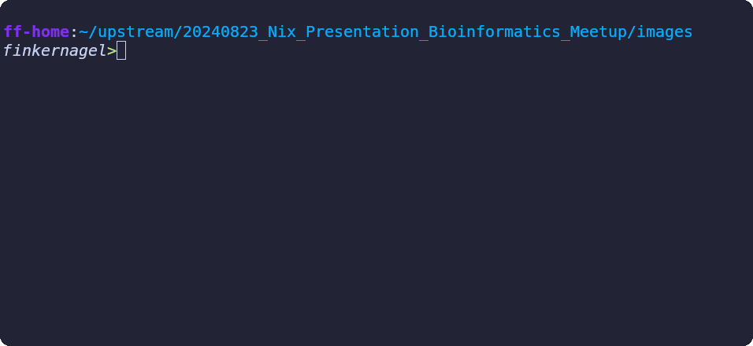
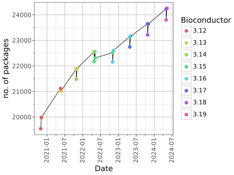

Nix
Nix
or how to stop worryingand learn to love managed dependency hell Author: Florian Finkernagel, 2024-08-29
Motivation
"I don’t care what OS you use, if you install Nix on it, I can guarantee that everything you ever need in this project Just Works, without you having to lift a finger." - Jacek Generowicz

Nix+Nixlang
Nixpkgs
Flakes
NixOS
poetry2Nix
nixR
CI
nurl
flox
hydra
cachix
anysnake
binary caching
homeManager
remote build
disko
runFHS
wfvm
nixos-anywhere
vulnix
agenix
nix-ld
naersk
direnv
impermanence
cross-building
What Nix gives you
- Instant access to 110k+ packages
- Reproducible software environments for all languages
-
Declarative, reproducible, hermetic builds of
- binaries
- shell environments
- machines
- containers
- VMs
- ISO- & SD-images
Nix shell example
Nix central idea
- Model dependencies as a D.A.G.
- n name the nodes by hashes of their inputs (Merkel tree)
- This allows you to have multiple versions of everything
The Purely Functional Software Deployment Model - Eelco Dolstra, 2006, PhD Thesis
graph TD
A[Build instructions] --nixcpp--> B[Derivation]
B --nix daemon--> C[Realization - Nix store path]
graph LR
classDef default font-size:26pt;
hello((Hello))
graph LR
classDef default font-size:26pt;
hello((Hello-2.12.1))
graph LR
classDef default font-size:26pt;
hello((Hello-2.12.1))
gcc((gcc-13-2.0))
glibc((glibc-2.39-52))
gcc --> hello
glibc --> hello
graph LR
classDef default font-size:20pt;
classDef FOD stroke:#0f7f00,stroke-width:3px;
A(...)
B(...)
hello((Hello-2.12.1))
gcc((gcc-13-2.0))
glibc((glibc-2.39-52))
gcc --> hello
glibc --> hello
A --> gcc
B --> glibc
Derivation
`/nix/store/<hash-of-inputs&definition>-Hello-2.12.1`
and `./results/`
`/nix/store/<hash-of-inputs&definition>-Hello-2.12.1`
and `./results/`
graph LR
classDef default font-size:20pt;
classDef FOD stroke:#0f7f00,stroke-width:3px;
A(...)
B(...)
hello((Hello-2.12.1))
gcc((gcc-13-2.0))
glibc((glibc-2.39-52))
gcc --> hello
glibc --> hello
tgz((hello.tar.gz)):::FOD
tgz --> hello
A --> gcc
B --> glibc
Derivation
/nix/store/<hash-of-inputs&definition>-Hello-2.12.1
/nix/store/<hash-of-inputs&definition>-Hello-2.12.1
Fixed output derivation
/nix/store/<hash-of-content>-hello-2.12.1.tar.gz
/nix/store/<hash-of-content>-hello-2.12.1.tar.gz
graph LR
classDef default font-size:20pt;
classDef FOD stroke:#0f7f00,stroke-width:3px;
A(...)
B(...)
hello((Hello-2.12.1))
gcc((gcc-13-2.0))
glibc((glibc-2.39-52))
gcc -.-> hello
glibc --> hello
tgz((hello.tar.gz)):::FOD
tgz -.-> hello
A -.-> gcc
B -.-> glibc
Derivation
/nix/store/<hash-of-inputs&definition>-Hello-2.12.1
/nix/store/<hash-of-inputs&definition>-Hello-2.12.1
Fixed output derivation
/nix/store/<hash-of-content>-hello-2.12.1.tar.gz
/nix/store/<hash-of-content>-hello-2.12.1.tar.gz
Nixlang
Functional, lazy, dynamically typed, domain-specific
let
pkgs = import <nixpkgs> {};
in
pkgs.stdenv.mkDerivation rec {
pname = "hello";
version = "2.12.1";
src = pkgs.fetchurl {
url = "mirror://gnu/hello/hello-${version}.tar.gz";
sha256 = "sha256-jZkUKv2SV28wsM18tCqNxoCZmLxdYH2Idh9RLibH2yA=";
};
buildInputs = [];
nativeBuildInputs = [];
}
/nix/store/jdgbv5g79avnrx5bdi59jq9ibbxycq8x-hello-2.12.1
Derivation / .drv files
{
"/nix/store/jgikc5sz2ivyi82mn679183a1fjms4ha-hello-2.12.1.drv": {
"args": [
"-e",
"/nix/store/v6x3cs394jgqfbi0a42pam708flxaphh-default-builder.sh"
],
"builder": "/nix/store/5jw69mbaj5dg4l2bj58acg3gxywfszpj-bash-5.2p26/bin/bash",
"env": {
"__structuredAttrs": "",
"buildInputs": "",
"builder": "/nix/store/5jw69mbaj5dg4l2bj58acg3gxywfszpj-bash-5.2p26/bin/bash",
"cmakeFlags": "",
"configureFlags": "",
"depsBuildBuild": "",
"depsBuildBuildPropagated": "",
"depsBuildTarget": "",
"depsBuildTargetPropagated": "",
"depsHostHost": "",
"depsHostHostPropagated": "",
"depsTargetTarget": "",
"depsTargetTargetPropagated": "",
"doCheck": "",
"doInstallCheck": "",
"mesonFlags": "",
"name": "hello-2.12.1",
"nativeBuildInputs": "",
"out": "/nix/store/jdgbv5g79avnrx5bdi59jq9ibbxycq8x-hello-2.12.1",
"outputs": "out",
"patches": "",
"pname": "hello",
"propagatedBuildInputs": "",
"propagatedNativeBuildInputs": "",
"src": "/nix/store/pa10z4ngm0g83kx9mssrqzz30s84vq7k-hello-2.12.1.tar.gz",
"stdenv": "/nix/store/dd7nxjnni7nzm0846fq5xrm89ais5lwz-stdenv-linux",
"strictDeps": "",
"system": "x86_64-linux",
"version": "2.12.1"
},
"inputDrvs": {
"/nix/store/0s62n3lv2bca7w4ik17dqnsmnfqi53lk-stdenv-linux.drv": {
"dynamicOutputs": {},
"outputs": [
"out"
]
},
"/nix/store/5rydfkrpd5vdpz4qxsypivxwy9y6z8gl-bash-5.2p26.drv": {
"dynamicOutputs": {},
"outputs": [
"out"
]
},
"/nix/store/r9p6f6j2mdzhpp5jgxcxmk83pp71pv89-hello-2.12.1.tar.gz.drv": {
"dynamicOutputs": {},
"outputs": [
"out"
]
}
},
"inputSrcs": [
"/nix/store/v6x3cs394jgqfbi0a42pam708flxaphh-default-builder.sh"
],
"name": "hello-2.12.1",
"outputs": {
"out": {
"path": "/nix/store/jdgbv5g79avnrx5bdi59jq9ibbxycq8x-hello-2.12.1"
}
},
"system": "x86_64-linux"
}
}
Sandboxed build
- Nix daemon builds derivations
- Defined, 'hermetic' environment
- Only sees the input's paths
- Happens in temp. directory
-
No network access
(except Fixed Output Derivations) - Protected store (even from root!)
/nix/store/978ipm5g2x1g0zc1697yr9ags9s10y8f-hello-2.12.1
vs
/nix/store/978ipm5g2x1g0zc1697yr9ags9s10y8f-hello-2.12.1
Nixpkgs
- ~114k packages
- Largest and most up to date repository
- ~3500 maintainers
- Managed on github: 650.000 commits
- One version(-ish) of everything per release
- released twice a year
Nixpkgs growth rate

Source: Repology.org, 2024-08
NixOs
- Adds a module system in nixlang
- Linux distribution
- Runs from one (kernel, /etc, and /run/current-system/sw/bin)
- Atomar 'generations', 'infinite' roll-back
- Ephemeral systems
- Can also build containers, VMs, bootable usb-sticks
Module definition
{ config, lib, ... }:
with lib; let
cfg = config.networking;
in {
options = {
networking.timeServers = mkOption {
default = [ "0.nixos.pool.ntp.org" "1.nixos.pool.ntp.org" ];
type = types.listOf types.str;
description = "The set of NTP servers from which to synchronise.";
} };
config = {
systemd.services.ntpd = lib.mkIf cfg.networking.ntpd.enable {
description = "NTP Daemon";
serviceConfig = {
ExecStart = ''
@${ntp}/bin/ntpd ntpd -g \
${builtins.concatStringsSep ";" cfg.networking.timeServers}
'';
}; }; }; }
Module usage
... nixpkgs.lib.nixosSystem {
system = "x86_64-linux";
imports = [ ./hardware_configuration.nix ];
users.user = {
john = {
isNormalUser = true;
initialPassword = "swordfish";
openssh.authorizedKeys.keys = [
(builtins.readFile ./users/john/authorized_keys)];
};};
services.openssh = {
enable = true;
settings = {
PermitRootLogin = "no";
PasswordAuthentication = false;
};};
networking.timeServers = [ "ntp-1.uni-marburg.de" ];
environment.systemPackages = [ pkgs.fetchmail ];
}; }; }
Flakes
graph BT
A[<img src='images/nix flake logo.png' width='40' /> your flake] --> B[<img src='images/nix flake logo.png' width='40' />nixpkgs]
A --> C[<img src='images/nix flake logo.png' width='40' />other]
C --> D[<img src='images/nix flake logo.png' width='40' />]
C --> E[<img src='images/nix flake logo.png' width='40' />]
Example flake.nix
{
inputs = {
nixpkgs.url = "github:nixos/nixpkgs/24.05";
old_nixpkgs.url = "github:nixos/nixpkgs/21.05";
};
outputs = { self, nixpkgs, old_nixpkgs, }:
let
pkgs = import nixpkgs {system = "x86_64-linux";};
old_pkgs = import old_nixpkgs {system = "x86_64-linux";};
in {
packages.x86_64-linux.default = pkgs.runCommand "default" {} ''
mkdir $out
ln ${pkgs.hello}/bin/hello $out/hello -s
ln ${old_pkgs.hello}/bin/hello $out/hello_old -s
'';
};
}
NixR (my project)
- Almost all CRAN & Bioconductor packages
NixR example
inputs = { ... nixR.url = "github:TyberiusPrime/nixR"; };
outputs = { self, nixpkgs, nixR, }: {
packages.x86_64-linux.default = nixR.R_by_date {
date = "2022-05-10";
r_pkg_names = [ "Rcpp" "kedd" "stringi" ];
nix_pkgs_pkgs = import nixpkgs {system = "x86_64-linux";};
additional_packages = {
"kedd_1.0.3" = ({
src = pkgs.fetchurl {
sha256 = "38760abd8c8e8f69ad85ca7992803060acc44ce68358de1763bd2415fdf83c9f";
url = "https://cran.r-project.org/src/contrib/Archive/kedd/kedd_1.0.3.tar.gz";
};);};}};
poetry2nix
- Python needs version resolution
-
flowchart TB A -- (ancient-)poetry --> B B -- poetry2nix --> C A[pyproject.toml] B[poetry.lock] C[nix derivations]
- Works for large parts of pypi
Nix+Nixlang
Nixpkgs
Flakes
NixOS
poetry2Nix
nixR
- Scale: Single scripts & binaries to full machines and everything in between
- Control: at every level of the stack
- Share & reuse: Very good
- Tooling: Could be better (1st gen system...)
- Learning resources: Many, resources, including structured teachings
- Community: Very active, very helpful, somewhat controversial, overly relying on github
Nix vs *
Vs Docker
Nix
- Trivially shared packages
- Assembly of packages, not 'layers'
- Fast changes
- Reproducible builds
Docker
- Changes in early layers invalidate all later layers
- Container images are one-off builds, non repeatable
Vs Conda
Nix:
- Full stack, not just Python and R
- Reproducible
- Much larger scope
- Package your own stuff easily
Conda:
- Conda easier to install
- Version resolving (NP, slow, reproducible?)
- Prebuild binaries with cuda
- Possibly easier learning curve
Nix Vs Ansible/Puppet/Salt
Nix:
- Declerative
- Reproducible
- Straight forward
others:
- Imperative 'best effort'
- Rollback impossible